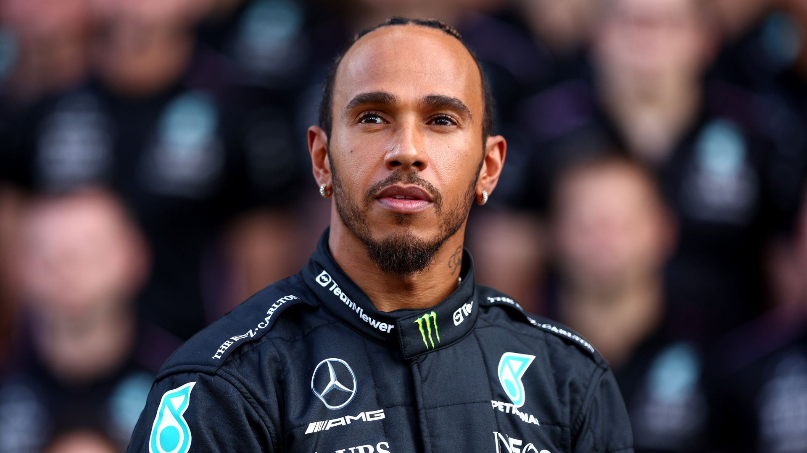

Notícia 1: Nova Equipe na Fórmula 1!
Uma nova equipe se junta ao grid da Fórmula 1 em 2024. A equipe está trazendo novas tecnologias e pilotos promissores.
A Fórmula 1 é a principal categoria do automobilismo mundial, oferecendo corridas emocionantes e tecnologia de ponta. A temporada de 2024 está cheia de expectativas e novos desafios.
Os pneus da Fórmula 1, fornecidos pela Pirelli, incluem compostos macios, médios e duros, cada um projetado para condições específicas. Os pneus macios oferecem alta aderência e tração, ideais para voltas rápidas, mas têm menor durabilidade. Os médios proporcionam um equilíbrio entre desempenho e vida útil, adequados para circuitos mistos. Os duros, com menor aderência, são mais duráveis e ideais para estratégias de parada mais longas. Além disso, existem pneus para chuva, como os intermediários, que lidam com pistas molhadas, e os lúgubres, projetados para condições de chuva intensa. A escolha do composto certo é crucial para o sucesso em cada corrida.
Uma nova equipe se junta ao grid da Fórmula 1 em 2024. A equipe está trazendo novas tecnologias e pilotos promissores.
O calendário da temporada 2024 foi atualizado com novas corridas e alterações nos horários das etapas.
Oscar Piastri lavou a honra da McLaren e venceu o GP do Azerbaijão, realizado neste domingo (15) em Baku.
A baixo o vídeo:
| Posição | Piloto | Pontos | Imagem |
|---|---|---|---|
| 1 | Max Verstappen | 300 |  |
| 2 | Lewis Hamilton | 280 |  |
| 3 | Charles Leclerc | 260 |  |
| 4 | Carlos Sainz | 220 |  |
| 5 | Oscar Piastri | 195 |  |
| 6 | Lando Norris | 140 |  |
| 7 | George Russel | 120 |  |
| 8 | Checo Perez | 100 |  |
| 9 | Fernando alonso | 95 |  |
| 10 | Pierre gasly | 89 |  |
Vídeo do senna em monaco:
Vídeo da Batida:
Vídeo do carro: